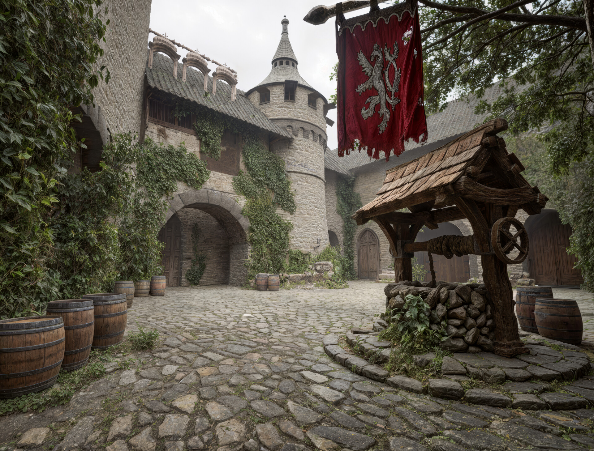

Overview

Features
There are two Master Bedrooms in the castle, and they are the most pampered rooms of all. Here, you'll have a perfect view of the peasants surrounding you, a couch set up by the TV, and a king-sized bed fitted with curtains to shut yourself away from everyone else.
The Dining Room, also known as the Great Hall, is where meals will be served. Keep in mind, that the food itself must be prepared and cooked by you. Unless, of course, you have younger sibling or children, in which case, you can make them prepare the food for you, the royal majesty.
The Cellar is just beneath the Great Hall, and will serve as your refrigerator for your main dishes and beverages.
The Pantry is next to the Cellar, and holds smaller snacks and board games. If you're looking for a quick eat or a little fun, the Pantry is your destination.
The Bathroom, also known as the Privy, is a wooden seat with a hole, but this tiny space was, at the time, a room almost no one else in the kingdom could afford. People did their business in chamber pots and emptied it out into the streets below. Be thankful for what you have.
Your castle is a pet-friendly environment, and here, we have stables to provide your furry friend with a comfortable shelter. You can even bundle up with your pets at the sacrifice of your own comfort. Please do not bring your pets into the master bedrooms.
The rest of the bedrooms, better known as the Servants' Quarters, are a minimalist's dream. With six small beds and plenty of space on the stone floor for suitcases, This room would be ideal for kids or stingy relatives who did not chip in for the payment of this bed and breakfast.
Beyond the castle gates, lies a plethora of exciting activities, museums, restaurants, and so much more. Travel forward in time to watch Dolly Parton's Stampede, encounter mysterious creatures in Ripley's Believe it or Not, and take on dangerous thrills at Silver Dollar City Amusement Park!
Whether you're spending your honeymoon like a king and queen, or taking the whole family on a week-long royal vacation, Castle Respite will be the perfect home for you.